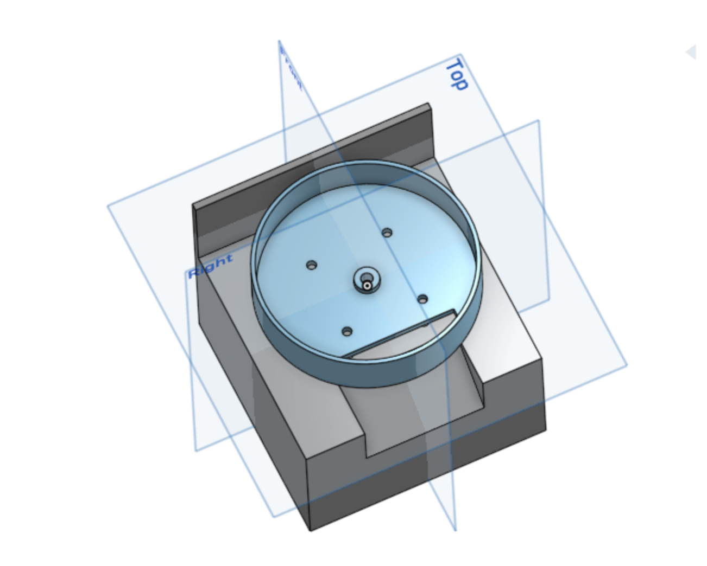
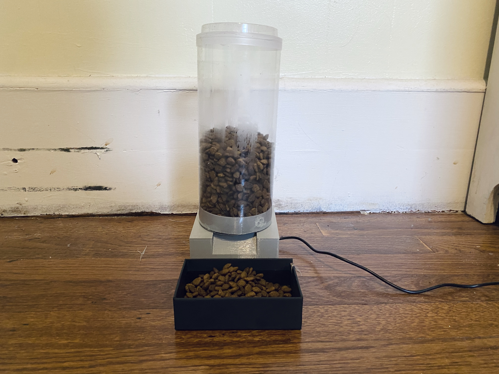
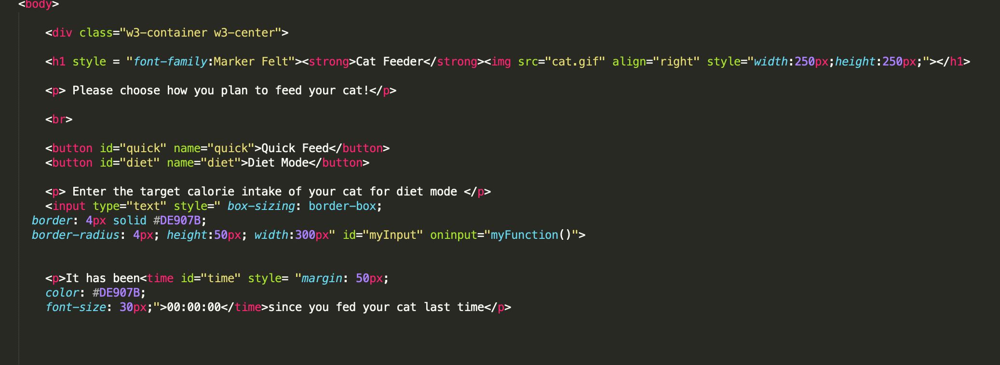
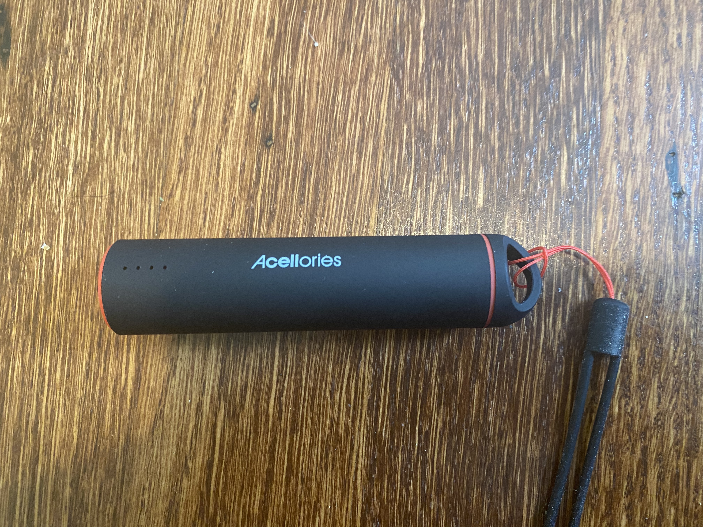
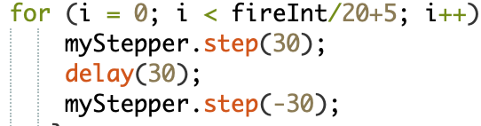

Watch my Youtube video
To conclude this course, I created a cat feeder as my final project. In this documentation, I recorded some of the main challenges and incremental process of my project. I started off wanting to make a cat toy with a feeding function, as shown in the project proposal. As I went deeper into all the skills, I decided to simply create a cat feeder that is remotely controlled.
To make it more of an unique and creative project, I added two more functions to it-- portion control and timer. User can either choose the Quick Feed Mode, feeding the cat by simply pressing a button, or Diet Mode, costumizing the amount of caf foods released with a target calorie. A timer would be on the webpage as well to remind the user the last time he/she feeds the cat. Comparing to similar products in the market, these two features definitely make my product stand out. Besides, a similart product costs about $160-250, making price another advantage of my design.
I had some experience with OnShape prior to this class, so I chose it for my project. I designed the base for the cat feeder and a disk for the container on top to rotate. During the process, I learned the importance of simplifying the modal for higher efficiency of printing and assembling. As a result, I gave up on the idea of making a seperate gate for the cat food to come out. Instead, I incorporate that entrance and motor shaft to existing parts. Both of the parts are designed according to the dimension of a 1.5L water bottle, which I later attached to the disk with hot glue gun. Prusa Slcier was used to prepare my modal for 3D printing, as shown in the video. Here's a picture of the design.
 I set up a HTML page to commuicate with my Huzzah board through Firebase. It took me quite a while to understand how these three communicate with each other, as well as to get use to Javascript. I created three main functions to satisfy my initial ideas-- two feeding buttons and a text entry for portion control. In addition, I added a timer that displays the time that has passed since last time the cat was fed.
I tried my best to simplify my webpage to make it more user-friendly and pretty (?). I also make sure that it presents well on different devices. Here's a screen recording clip from my phone.
As for the Arduino coding, the first trouble I encountered was the motor skipping steps. Even though it was supposed to be 200 stpes/revolution, it went for somewhere between 60 to 120 degrees when I ordered it to go 250 steps. I tried multiple ways for trouble shooting, and it turned out to be the problem with voltage. As a result, I connected an outside 5V power bank to the Huzzah board, and it set up a solid foundation for my next steps.
Initially, I had my disk rotate for a certain degree and stay in position for a cerntain amount of time with the Delay function to let go the cat food. However, the result was extremely unstable with the entrance easily blocked by cat food. In that case, my goal of portion contral with changing delay time also failed. By talking to the instuctor, I figured an additional shaking action would be helpful. I went ahead to use a For loop to repeat a small angle change for a shaking effect. It was a lot of trials and erros, with me basically trying out differnet values. Here're some the failures:
To communicating with the Amount input on Firebase, I decided to appky that value to the For loop, changing how may times the function would be repeated for. A bit of calculation is also included to convert target calorie intake to repeating times.
This is the full Arduino code.